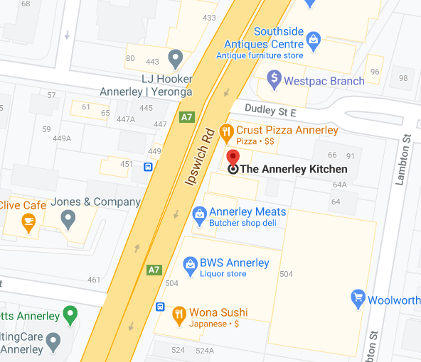
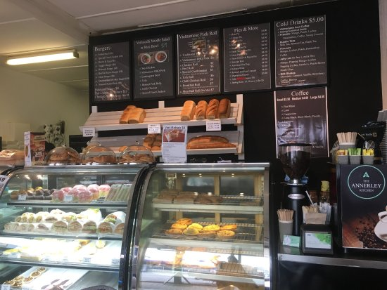

The Annerley Kitchen
The Annerley Kitchen is located at 496 Ipswich Rd, Annerley QLD 4103.


(Cee, 2017)
The Annerley Kitchen is a regular bakery with a twist.
You can purchase decadents cupcakes and slices, as well as anjoy a delicous coffee.